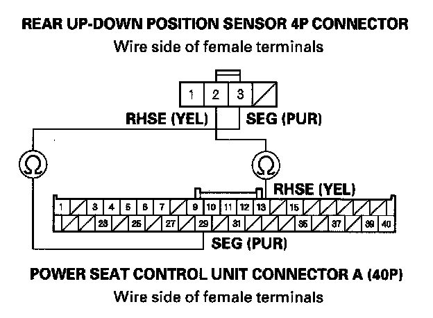
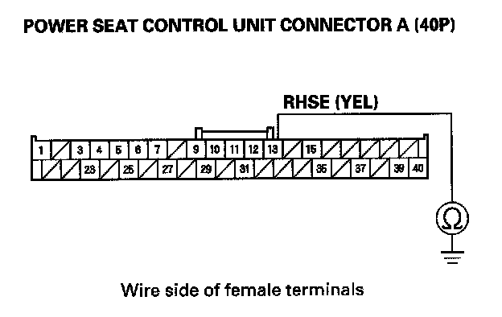
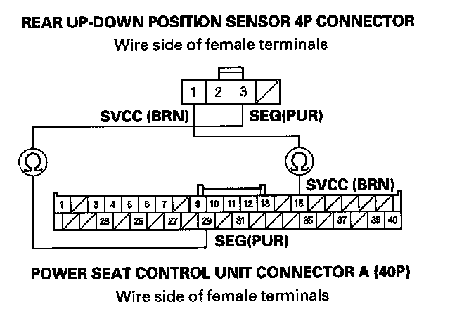
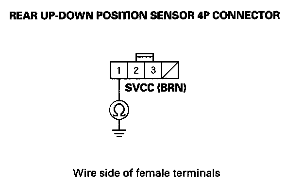
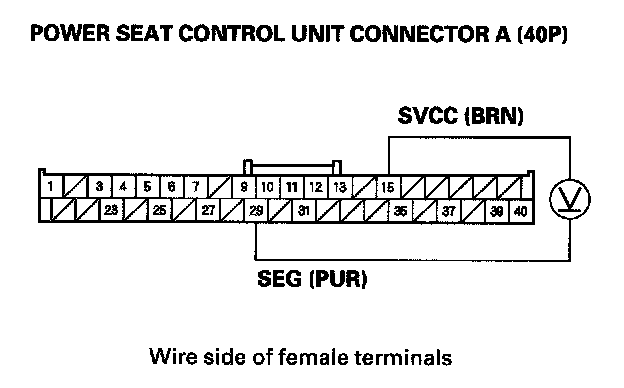
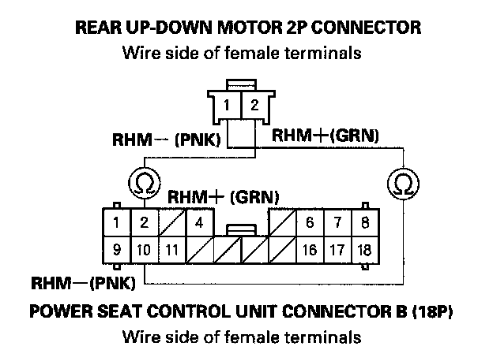
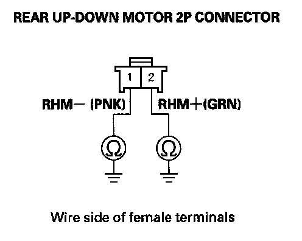

B1827
DTC B1827: Power Seat Rear Up-down Motor Pulse ErrorNOTE: If you are troubleshooting multiple DTCs, be sure to follow the instructions in B-CAN System Diagnosis Test Mode A.
DTC B1827 is stored when the rear up-down switch is operated more than 1 second after the seat moves to the most up or most down position, even when the system is OK.
1. Turn the ignition switch OFF and then back ON (II).
2. Clear the DTCs with the HDS.
3. Operate the power seat adjustment switch in all directions for more than 1 second each.
4. Check for the DTCs with the HDS.
Is DTC B1827 indicated?
YES - Go to step 5.
NO - Intermittent failure, the rear up-down motor/position sensor is OK at this time. Check for loose or poor connections at the power seat control unit connectors.
5. Check for DTCs with the HDS.
Is DTC B1836 also indicated?
YES - Troubleshoot B1836 first.
NO - Go to step 6.
6. Check for DTCs with the HDS.
Are DTCs B1825, B1826, and/or B1828 also indicated?
YES - Go to step 17.
NO - Go to step 7.
7. Turn the ignition switch OFF, and then back ON (II).
8. Operate the rear up-down switch for 2 seconds, and check the rear up-down motor operation.
Does the rear up-down motor run smoothly?
YES - Go to step 9.
NO - Go to step 26.
9. Turn the ignition switch OFF.
10. Disconnect the power seat control unit connector A (40P).
11. Disconnect the rear up-down position sensor 4P connector.

12. Check for continuity between the power seat control unit connector A (40P) No. 13 and No. 29 terminals and the rear up-down position sensor 4P connector No. 2 and No. 3 terminals respectively.
Is there continuity?
YES - Go to step 13.
NO - Repair open in the wire.

13. Check for continuity between the power seat control unit connector A (40P) No. 13 terminal and body ground.
Is there continuity?
YES - Repair short to ground in the wire.
NO - Go to step 14.
14. Reconnect the power seat control unit connector A (40P).
15. Turn the ignition switch ON (II).

16. Measure the voltage between the rear up-down position sensor 4P connector No. 2 (+) and No. 3 ( - ) terminals.
Is there about 5 V?
YES - Faulty rear up-down position sensor, replace the rear up-down motor.
NO - If there is no voltage, replace the power seat control unit. If there is battery voltage, repair a short in the wire (sensor line).
17. Turn the ignition switch OFF.
18. Disconnect the power seat control unit connector A (40P).
19. Disconnect the rear up-down position sensor 4P connector.

20. Check for continuity between the power seat control unit connector A (40P) No. 15 and No. 29 terminals and the rear up-down position sensor 4P connector No. 1 and No. 3 terminals respectively.
Is there continuity?
YES - Go to step 21.
NO - Repair open in the wire.
21. Disconnect the 4P connector from the slide position sensor and the front up-down position sensor, then disconnect the recline motor/lumbar support motor 8P connector.

22. Check for continuity between body ground and the rear up-down position sensor 4P connector No. 1 terminal.
Is there continuity?
YES - Repair short in the wire.
NO - Go to step 23.
23. Reconnect the power seat control unit connector A (40P).
24. Turn the ignition switch ON (II).

25. Measure the voltage between the power seat control unit connector A (40P) No. 15 and No. 29 terminals.
Is there battery voltage when the rear up-down switch is operated?
YES - Replace the rear up-down motor/position sensor.
NO - Replace the power seat control unit.
26. Turn the ignition switch OFF.
27. Disconnect the power seat control unit connector B (18P).
28. Disconnect the rear up-down motor 2P connector.

29. Check for continuity between the power seat control unit connector B (18P) No. 2 and No. 10 terminals and the rear up-down motor 2P connector No. 1 and No. 2 terminals respectively.
Is there continuity?
YES - Go to step 30.
NO - Repair open in the wire.

30. Check for continuity between body ground and the rear up-down motor 2P connector No. 1 and No. 2 terminals individually.
Is there continuity?
YES - Repair short in the wire.
NO - Go to step 31.
31. Test the rear up-down motor.
Is the motor OK?
YES - Replace the power seat control unit.
NO - Replace the rear up-down motor/position sensor.